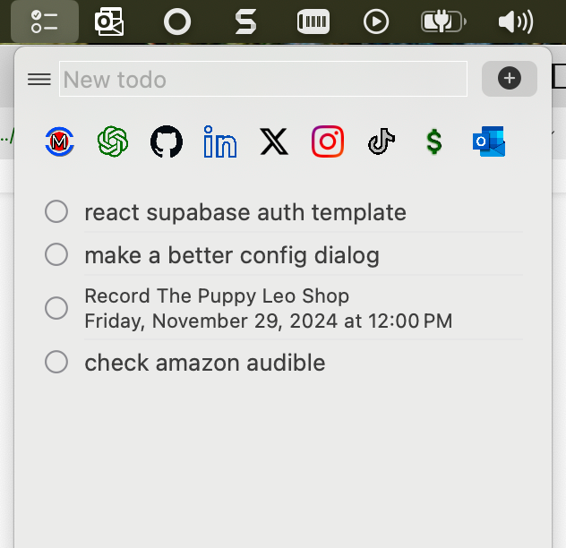
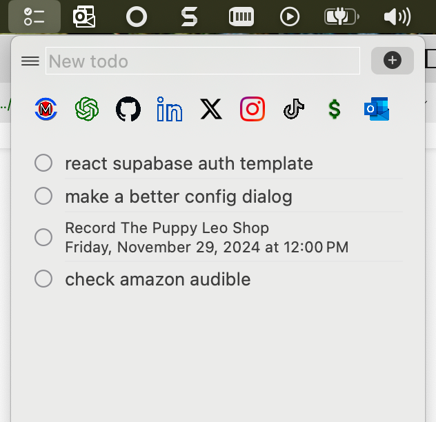
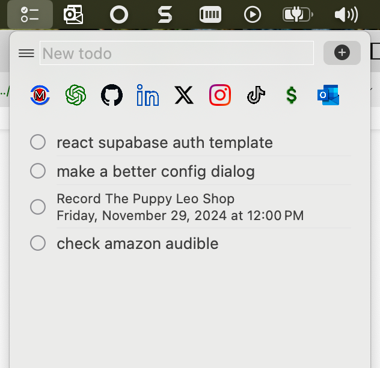

TodoMenuBar
While there are many ToDo ToDo apps, this is NOT one of them. I wanted to see if I could
create a todo as a top menubar (for macos). I wanted to see it I could simply describe
the App and AI would do the rest.
 
Have a look at the code and see if you can figure out how it works. I will be adding more
details soon. https://github.com/codemarc/TodoMenuBar

Have a look at the code and see if you can figure out how it works. I will be adding more
details soon. https://github.com/codemarc/TodoMenuBar
If you just want to install it you can download this disk image TodoMenuBar.dmg and mount it. Then copy TodoMenuBar.app to your applications folder.

If you just want to install it you can download this disk image TodoMenuBar.dmg and mount it. Then copy TodoMenuBar.app to your applications folder.